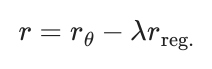
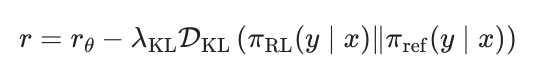
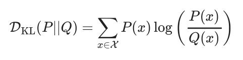
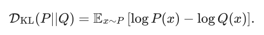
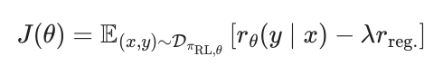
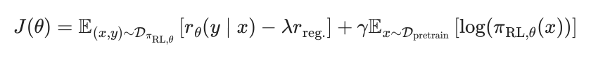
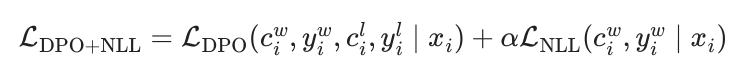
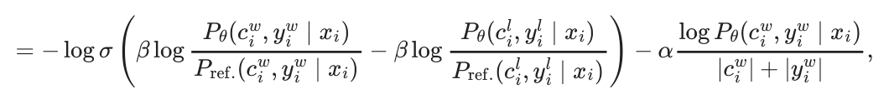
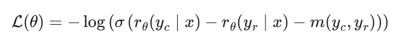

15 Regularization
- How a KL divergence constrains the RLHF process
- Why regularization prevents models from producing nonsensical outputs
- Different regularization techniques including pretraining gradients
Throughout the RLHF optimization, many regularization steps are used to prevent over-optimization of the reward model. Over-optimization in these contexts looks like models that output nonsensical text. Some examples of optimization “off the rails” are that models can output followable math reasoning with extremely incorrect answers, repeated text, switching languages, or excessive special characters. This chapter covers the different methods that’re used to control the optimization of models.
The most popular variant, used in most RLHF implementations at the time of writing, is a KL distance from the current policy to a reference policy across generated samples. “KL distance” is a colloquial term for expressing the optimization distance within the training process, even though KL divergence—the underlying mathematical method for measuring the separation of two probability distributions—does not satisfy the formal properties required to be a true distance metric (it is simply easier to call the number a distance than a numeric measure of distributional difference). Many other regularization techniques have emerged in the literature to then disappear in the next model iteration in that line of research. That is to say that regularization outside the core KL distance from generations is often used to stabilize experimental setups that can then be simplified in the next generation. Still, it is important to understand tools to constrain optimization in RLHF.
Throughout this chapter, we use x to denote prompts and y to denote completions. This notation is common in the language model literature, where methods operate on full prompt-completion pairs rather than individual tokens.
The general formulation, when used in an RLHF framework with a reward model, rθ is as follows:

With the reference implementation being:

#15.1 KL Divergences in RL Optimization
For mathematical definitions, see Appendix a. Recall that a KL divergence measure of probability difference is defined as follows:

In RLHF, the two distributions of interest are often the distribution of the new model version, say P(x), and a distribution of the reference policy, say Q(x). Different optimizers use different KL directions. Throughout this book, the most common “KL Penalty” that is used is called the reverse KL to the reference policy. In practice, this reduces to a Monte Carlo estimate that samples tokens from the RL model and computes probabilities from the reference model. Intuitively, this reverse KL has a numerical property that applies a large penalty when the new model, P or πRL, puts substantial probability mass where the original reference model assigns low probability.
The other KL direction is still often used in ML, e.g. in the internal trust region calculation of some RL algorithms. This penalty intuitively penalizes the new model when its update does not apply probability to a high-likelihood region in Q or πref. This is closer to an objective used for distillation or behavioral cloning.
#15.1.1 Reference Model to Generations
KL penalties are most commonly implemented by comparing the distance between the generated tokens during training to a static reference model. The intuition is that the model you’re training from has a style that you would like to stay close to. This reference model is most often the instruction tuned model, but can also be a previous RL checkpoint. With simple substitution, the model we are sampling from becomes πRL(x) and πref(x), shown above in eq. 15.2 (often P, and Q, in standard definitions, when applied for RL KL penalties). Such a KL divergence penalty was first applied to dialogue agents well before the popularity of large language models [1], yet KL control was quickly established as a core technique for fine-tuning pretrained models [2].
#15.1.2 Implementation Example
In practice, the implementation of KL divergence is often approximated [3], making the implementation far simpler. With the above definition, the summation of KL can be converted to an expectation when sampling directly from the distribution P(x). In this case, the distribution P(x) is the generative distribution of the model currently being trained (i.e. not the reference model). Then, the computation for KL divergence changes to the following:

This mode is far simpler to implement, particularly when dealing directly with log probabilities used frequently in language model training.
#1
generated_tokens = model.generate(inputs)
#2
logits = model.forward(generated_tokens[:, :-1]).logits
ref_logits = ref_model.forward(generated_tokens[:, :-1]).logits
#3
logprobs = F.log_softmax(logits, dim=-1)
ref_logprobs = F.log_softmax(ref_logits, dim=-1)
#4
token_logprobs = logprobs.gather(-1, generated_tokens[:,
1:].unsqueeze(-1)).squeeze(-1)
ref_token_logprobs = ref_logprobs.gather(-1, generated_tokens[:,
1:].unsqueeze(-1)).squeeze(-1)
#5
seq_logprob = token_logprobs.sum(dim=-1)
ref_seq_logprob = ref_token_logprobs.sum(dim=-1)
kl_approx = seq_logprob - ref_seq_logprob
kl_full = F.kl_div(ref_logprobs, logprobs, reduction='batchmean')Some example implementations include TRL and Hamish Ivison’s Jax Code.
#15.2 Pretraining Gradients
Another way of viewing regularization is that you may have a dataset that you want the model to remain close to, as done in InstructGPT [4] “in order to fix the performance regressions on public NLP datasets”. To implement this, they modify the training objective for RLHF. Taking eq. 15.1, we can transform this into an objective function to optimize by sampling from the RL policy model, completions y from prompts x in the RL dataset used for RLHF, which yields:

Then, we can add an additional reward for higher probabilities on the standard autoregressive next-token prediction loss used at pretraining, over a set of documents sampled from the pretraining corpus (or another dataset) to maintain textual coherence:

Recent work proposed using a negative log-likelihood term to balance the optimization of Direct Preference Optimization (DPO) [5]. Given the pairwise nature of the DPO loss, the same loss modification can be made to reward model training, constraining the model to predict accurate text (rumors from laboratories that did not publish the work).
The optimization follows as a modification to DPO.


where Pθ is the trainable policy model, Pref. is a fixed reference model (often the SFT checkpoint), and (ciw , yiw ) and (cil, yil) denote the winning and losing completions for prompt xi . The first term is the standard DPO logistic loss: it increases the margin between the win and loss using the difference of log-likelihood ratios, logPθPref., and β controls how strongly this preference signal pulls away from the reference. The second term is a length-normalized negative log-likelihood penalty on the winning completion, weighted by α, which helps keep the preferred text high-likelihood in an absolute language modeling sense rather than only relatively better than the rejected sample.
#15.3 Other Regularization
Controlling the optimization is less well defined in other parts of the RLHF stack. Most reward models have no regularization beyond the standard contrastive loss function. Direct Alignment Algorithms handle regularization to KL divergences differently, through the β parameter (see the chapter on Direct Alignment).
Llama 2 proposed a margin loss for reward model training [6]:

where m(yc, yr) is the margin between two datapoints yc and yr representing numerical difference in delta between the ratings of two annotators. This is either achieved by having annotators rate the outputs on a numerical scale or by using a quantified ranking method, such as Likert scales.
Reward margins have been used heavily in the direct alignment literature, such as Reward weighted DPO, ‘’Reward-aware Preference Optimization’ ’ (RPO), which integrates reward model scores into the update rule following a DPO loss [7], or REBEL [8] that has a reward delta weighting in a regression-loss formulation.
[1]N. Jaques, S. Gu, D. Bahdanau, J. M. Hernández-Lobato, R. E. Turner, and D. Eck,
“Sequence tutor: Conservative fine-tuning of sequence generation models with kl-control,” in International conference on machine learning, PMLR, 2017, pp. 1645–
1654.
[2]N. Jaques et al., “Human-centric dialog training via offline reinforcement learning,” in Conference on empirical methods in natural language processing (EMNLP), 2020.
[3]J. Schulman, “Approximating KL-divergence.” http://joschu. net/blog/ kl-approx. html, 2016.
[4]L. Ouyang et al., “Training language models to follow instructions with human
feedback,” Advances in neural information processing systems, vol. 35, pp. 27730– 27744, 2022.
[5]R. Y. Pang, W. Yuan, K. Cho, H. He, S. Sukhbaatar, and J. Weston, “Iterative
reasoning preference optimization,” in Advances in neural information processing
systems (NeurIPS), 2024.
[6]H. Touvron et al., “Llama 2: Open foundation and fine-tuned chat models,” arXiv
preprint arXiv:2307.09288, 2023.
[7]B. Adler et al., “Nemotron-4 340B technical report,” arXiv preprint
arXiv:2406.11704, 2024.
[8]Z. Gao et al., “Rebel: Reinforcement learning via regressing relative rewards,” in
Advances in neural information processing systems (NeurIPS), 2024.